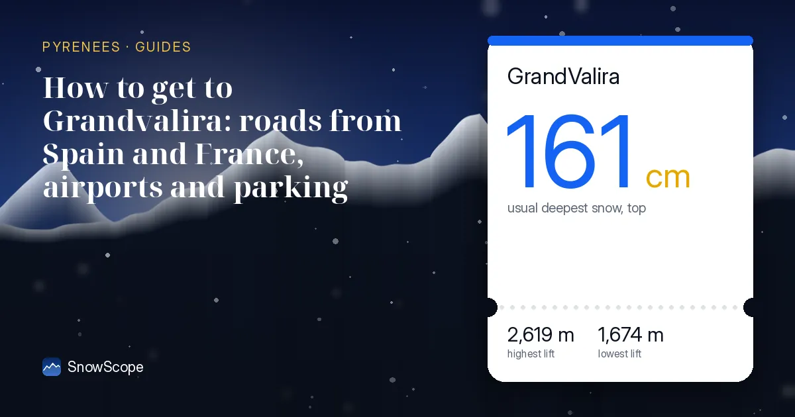
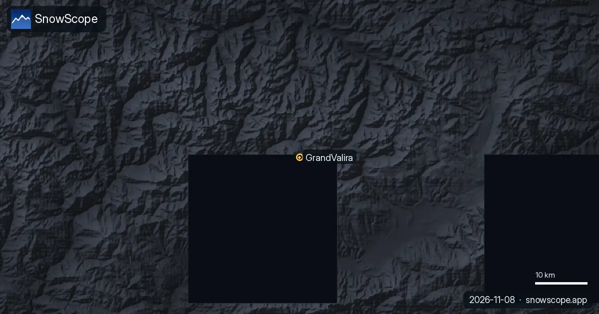

How to get to Grandvalira: roads from Spain and France, airports and parking
Grandvalira spans two Andorran parishes along a single valley road, with entry points from both the Spanish south and the French north at Pas de la Casa. Since Andorra has no airport and no train, every skier drives or takes a bus from France or Spain.
See the live snow forecast for GrandValira in the SnowScope appSnow depth, powder alerts and the 3D map, free.

Getting there from Spain
The Spanish approach uses the C-16 motorway from Puigcerdà or the C-145 from Lleida, both meeting at La Seu d'Urgell about 30 km south of the resort. From there, the CG2 road climbs north into Andorra's main ski valley. The route is open year-round but climbs above 2,000 m, so winter tyres and chains are essential.
Once in the valley, you have five entry zones: Encamp at the foot, then Canillo, El Tarter, Soldeu, and finally Grau Roig and Pas de la Casa near the ridge with France. Each has its own car parks and lift access, so you can choose where to park based on which sector you plan to ski.
Crossing from France
From France, the N-22 reaches Pas de la Casa at the border itself, the highest entry to Grandvalira. Beyond that point, two routes descend into the valley: the open road over Port d'Envalira at 2,408 m, or a toll tunnel 3 km long opened in 2002, running at about 2,000 m and saving time in bad weather.
The tunnel exit lies near Grau Roig, the uppermost ski sector. If you use the open road, allow extra time and check conditions first, since wind and snow can affect visibility and grip on the high pass.

Airports and bus links
Andorra's own airport at La Seu d'Urgell, 27 km away, has limited flights. Most skiers fly into larger hubs: Toulouse-Blagnac (176 km), Carcassonne (176 km), Barcelona-El Prat (200 km), or Girona-Costa Brava (260 km). From any of these, you can hire a car or catch a coach to Andorra.
Grandvalira runs a free ski bus within Andorra itself, so once you arrive in the country, moving between lift bases or car parks costs nothing if you have a resort ticket. Journey times from the main airports by car are three to five hours depending on traffic and the border you choose.
Where to park
Grandvalira publishes free space counts at its larger car parks in real time. Encamp's El Tarter sector offers 850 outdoor free spaces, while paid covered parking sits at Soldeu, Canillo and the Funicamp in Encamp itself. On weekends and school holidays, the free lots fill early, so check the resort's parking page before you leave home or arrive before 09:00.
The valley road (CG2) runs through each sector, so you do not need to drive the full length to reach upper zones. Park at your chosen entry point, ride the lifts uphill, and explore the whole domain from there.
Winter driving essentials
All routes into Andorra climb above 2,000 m in winter. Snow settles regularly: mid-mountain at Grandvalira (2,146 m) lies under snow about 168 days in a typical season, with the deepest cover usually in February. Carry winter tyres, chains, and an ice scraper, and check road conditions before setting out.
The Andorra Traffic Agency (www.mobilitat.ad) posts live updates on the CG2 and the Envalira road. In storms, the tunnel from France is often the safer choice over the high pass. Allow extra time if snow is falling or the wind is gusting.
What to expect at the valley altitude
The valley floor at Encamp sits at 1,674 m, so early-season snow cover is thin and rocky patches may show through. The mid-mountain lifts climb to 2,146 m, where the typical peak snow of 102 cm arrives, and the summit zone rises to 2,619 m with a usual peak of 161 cm. This height difference means better snow reliability higher up.
In November and April, snow at base level is rare; December through March is when the valley holds the most snow. Plan your trip for January through March if snow depth is your main concern.
Tips for skiers
- Book a hire car in advance if flying in; bus timetables are frequent but less flexible than a private vehicle.
- Carry winter equipment mandatory: the CG2 and Envalira road both cross 2,000 m and can close in heavy snow.
- On busy weekends, use the free resort ski bus between sectors instead of moving your car.
- Check the Andorra Traffic Agency website the morning you travel; in storms, the tunnel from France is often safer than the open pass.
- Before going off-piste anywhere in Andorra, read the official avalanche bulletin from Servei Meteorològic Nacional d'Andorra.
About these numbers
Resort snow depths are the deepest snow on the resort's upper slopes on the date shown; they are estimates for an area, not a measurement at one point. Forecasts can change. Always read the official avalanche bulletin before going off-piste.
Official avalanche bulletins: Servei Meteorològic Nacional d'Andorra – Estat de la neu
Cite this report
For research, teaching or the press: the numbers and charts are free to reuse under CC BY 4.0 with this citation.
SnowScope (2026), How to get to Grandvalira: roads from Spain and France, airports and parking, https://snowscope.app/blog/en/2026/11/how-to-get-to-grandvalira-andorra-roads-airports-parking.html, accessed 2026-11-09
SnowScope (Atlas Labs). (2026, November 9). How to get to Grandvalira: roads from Spain and France, airports and parking. SnowScope snow reports. https://snowscope.app/blog/en/2026/11/how-to-get-to-grandvalira-andorra-roads-airports-parking.html
BibTeX
@misc{snowscope2026howtogettograndvaliraand,
author = {{SnowScope (Atlas Labs)}},
title = {How to get to Grandvalira: roads from Spain and France, airports and parking},
year = {2026},
month = nov,
howpublished = {\url{https://snowscope.app/blog/en/2026/11/how-to-get-to-grandvalira-andorra-roads-airports-parking.html}},
note = {Published 2026-11-09 16:44 UTC; accessed 2026-11-09}
}· CC BY 4.0 · Methods, data and tools →
GrandValira: snow and temperature by height, this winter vs last (tools) →
Follow GrandValira
Free: a message when fresh snow is coming, and the forecast every morning.
More snow reports

How to spend one good day at Luz-Ardiden, a small ski area above Luz-Saint-Sauveur in the Hautes-Pyrénées: the road, the two sectors, the snow of 46 past winters and which weeks to choose.

Freezing level reaches 3400m–3600m over the next three days, bringing rain to the snowpack from 09–11 November. Forecast from 08 November.

Baqueira-Beret sits in the Val d'Aran, on the Atlantic side of the Pyrenees. What that means for its snow, tested with 46 past winters against La Molina, and when to go.